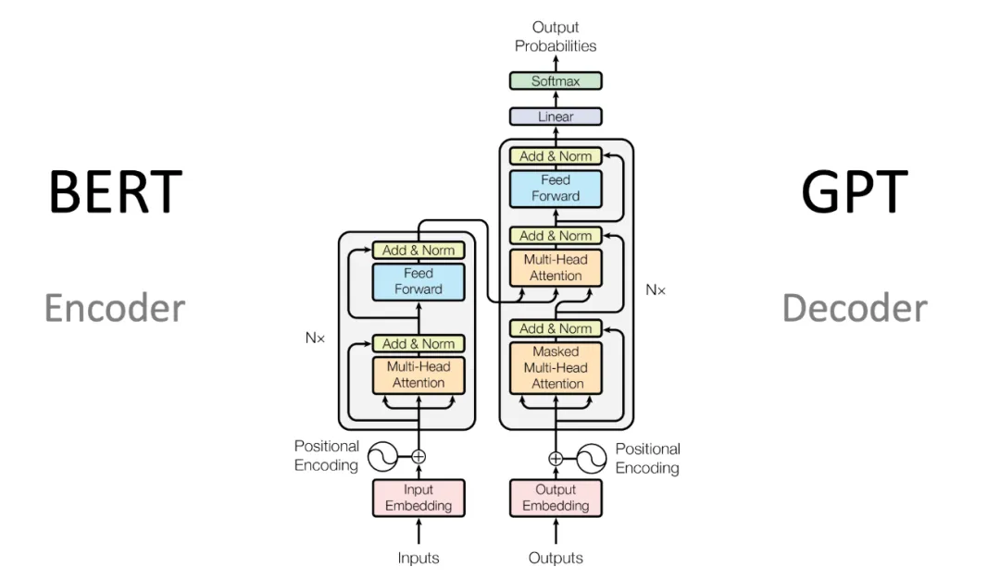
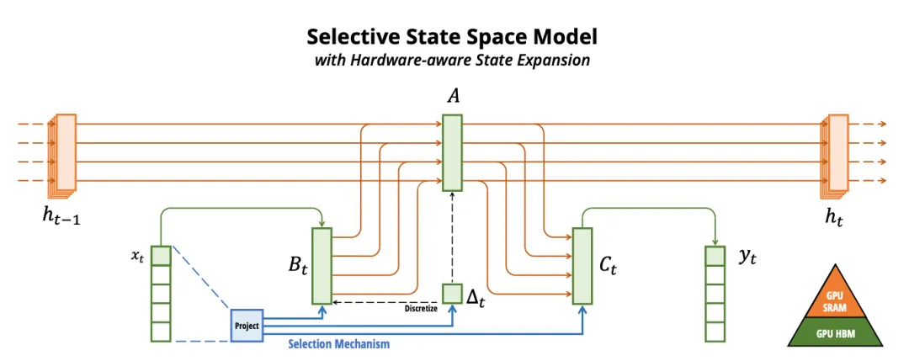
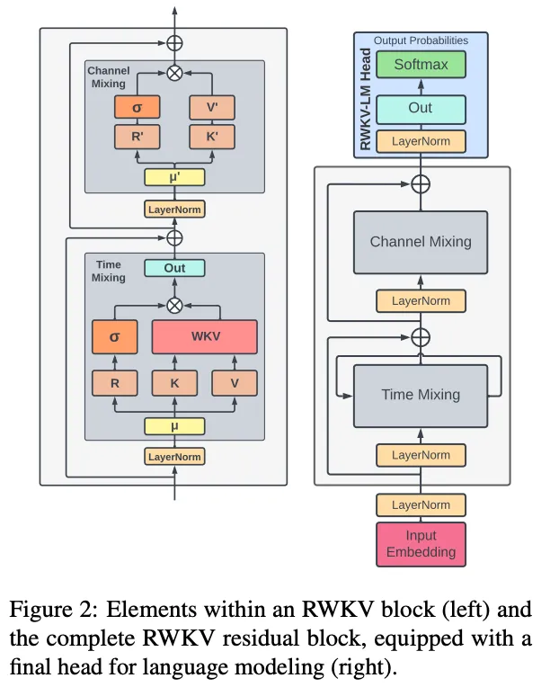

如果按照从底层能力到真实落地的逻辑，可以分为七大技术板块：
-
模型架构：决定模型的计算骨架和能力上限
-
数据工程：决定模型吃什么、怎么吃、吃得是否干净
-
训练与后训练：让模型具备基础能力、指令能力和对齐能力
-
推理与服务优化：让模型跑得动、跑得快、跑得便宜
-
Reasoning与Test-time Compute：让模型在推理时“多想一步”
-
应用系统：RAG、Agent、多模态和上下文工程
-
评测、安全与基础设施：让模型可评估、可治理、可生产化
下面逐一展开。
一、模型架构技术：大模型的“骨架”
Transformer架构：当前绝对主力
Transformer自2017年Vaswani等人提出以来，始终是绝大多数大模型的底层架构。其核心机制是多头自注意力（Multi-Head Self-Attention），让模型能够同时关注输入序列中的不同位置。

Transformer 模型结构
-
Encoder-Decoder Transformer：早期机器翻译、摘要等任务常用的标准结构
-
Encoder-only Transformer：以BERT类模型为代表，擅长理解和分类任务
-
Decoder-only Transformer：GPT、LLaMA、Qwen、DeepSeek等主流大语言模型采用的结构，已经成为生成式大模型的事实标准
核心痛点：标准注意力机制的计算复杂度为O(N²)，上下文越长，注意力计算成本增长越快；同时KV Cache会随上下文长度线性增长，成为长上下文推理的显存瓶颈。
注意力机制优化：解决长上下文瓶颈
为了解决Transformer在长文本场景下的计算与显存压力，业界形成了多条优化路线：
| 技术 | 核心思路 | 价值 |
|---|---|---|
| GQA（Grouped Query Attention） | 多个Query头共享同一组KV头 | 降低KV Cache占用，提升推理吞吐 |
| MQA（Multi-Query Attention） | 所有Query头共享一组KV头 | 更激进地压缩KV Cache |
| MLA（Multi-Head Latent Attention） | 将KV压缩到低维潜空间存储 | 显著降低长上下文显存成本 |
| 稀疏注意力 | 只计算部分关键token或局部区域的注意力 | 降低长序列计算量 |
| 滑动窗口注意力 | 只关注局部窗口内的上下文 | 适合超长文本和流式处理 |
| 线性序列建模路线 | 用SSM、RNN-like或线性注意力替代标准注意力 | 绕开O(N²)注意力瓶颈 |
需要注意的是，Mamba、RWKV等更准确地说属于状态空间模型/循环式序列建模/线性复杂度序列建模路线，不应简单等同于传统“线性注意力”。
MoE架构：用“稀疏激活”换效率
MoE（Mixture of Experts）是当前平衡模型规模、推理成本和能力上限的重要路线。它的核心思想是：模型拥有海量总参数，但每次推理只激活其中一小部分专家参数。
典型优势包括：
-
扩大总参数规模：模型可以容纳更多知识和能力
-
降低单次计算成本：每个token只路由到少数专家
-
提升训练与推理效率：适合大规模分布式训练和Expert Parallelism部署
典型问题也很明显：
-
路由器训练不稳定，容易出现专家负载不均衡
-
多机通信成本高，部署复杂度显著高于Dense模型
-
小batch或低并发场景下，MoE的工程收益会被通信开销抵消
代表路线包括DeepSeek-V3类大规模MoE、Mixtral类稀疏专家模型，以及面向端侧或垂直场景的轻量MoE模型。
非Transformer架构：重要挑战者，但还不是主流替代
2026年，Transformer仍是绝对主流，但非Transformer架构已经成为重要研究方向，尤其在长序列、低延迟、端侧推理和连续信号建模方面受到关注。
主要方向包括：
-
SSM（State Space Model）路线：以Mamba、Mamba-2等为代表，强调线性复杂度和长序列效率

-
RWKV类RNN-Transformer混合路线：保留并行训练优势，同时引入循环式推理特性

-
记忆增强架构：通过显式长期记忆模块扩展上下文能力
-
原生多模态架构：不再把视觉、语音、视频简单作为文本模型外挂，而是在架构层统一建模
这些路线值得持续关注，但在通用大语言模型上，短期内更现实的格局是：Transformer继续主导，非Transformer模块在长上下文、端侧和多模态场景中局部渗透。
二、数据工程：大模型能力的“燃料系统”
模型能力不仅取决于参数规模，更取决于数据质量、数据结构和数据生命周期管理。2026年的大模型竞争，很大程度上已经变成数据工程竞争。
预训练数据：从“越多越好”到“高质量配比”
预训练数据通常覆盖网页、书籍、论文、代码、数学、问答、百科、论坛、多语言语料等来源。早期Scaling Law强调数据量和参数量同步扩张，而现在更强调质量、去重、配比和领域覆盖。
关键技术包括：
-
数据清洗：去除低质网页、广告、模板页、垃圾文本
-
去重与近似去重：避免模型反复记忆重复样本
-
质量打分：用分类器、规则或强模型筛选高质量语料
-
数据配比：平衡代码、数学、通用文本、多语言、领域知识
-
数据课程学习（Curriculum Learning）：控制数据难度和训练顺序
专项能力数据：数学、代码、科学和工具使用
强模型的差异越来越多来自专项数据。
-
数学数据：题目、证明、解题链、形式化证明、可验证答案
-
代码数据：真实仓库、单元测试、issue/PR、API文档、代码执行反馈
-
科学数据：论文、实验记录、公式推导、结构化知识库
-
工具使用数据：搜索、浏览器、Shell、数据库、API、办公软件操作轨迹
这些数据决定模型是否能从“会聊天”升级为“能解决问题”。
合成数据：后训练时代的核心资产
2025-2026年，合成数据已经成为SFT、偏好优化和推理模型训练的主力来源之一。更强模型生成示范数据，再经过过滤、验证、重写和难例挖掘，用于训练下一代模型。
常见流程是：
种子任务 → 强模型生成答案/推理链 → 自动过滤 → 验证器校验 → 人工抽检 → 训练集入库
合成数据的关键不是“生成更多”，而是：
-
能不能生成足够难的样本
-
能不能过滤掉错误推理
-
能不能避免风格坍缩和数据同质化
-
能不能防止模型只学会“像答案”，而不是学会解决问题
数据治理：污染、版权、隐私与合规
数据治理已经成为大模型工程的底线能力。
必须关注：
-
Benchmark泄漏：训练集中混入评测题会导致虚高分数
-
版权风险：商业模型需要明确数据授权边界
-
隐私泄露：个人信息、密钥、内部文档必须过滤
-
数据可追溯：训练数据来源、版本、过滤规则需要可审计
三、训练与后训练技术：让模型“变聪明”
预训练：基础能力的源头
预训练通过海量无标注或弱标注数据，让模型获得语言理解、知识记忆、代码生成、数学推理和多语言能力。
2026年的预训练关注点包括：
-
Scaling Law回归：更强算力推动更大模型、更长训练周期
-
高质量token优先：低质数据堆量的收益下降
-
长上下文预训练：不是只在推理阶段扩窗口，而是在训练中让模型真正适应长依赖
-
多模态联合预训练：文本、图像、音频、视频、动作轨迹统一建模
SFT：赋予模型指令理解力
SFT（Supervised Fine-Tuning）是在预训练之后，用高质量指令-响应数据训练模型，使其学会遵循人类指令。
2026年的趋势是：
-
人工手写数据占比下降，合成数据占比上升
-
从单轮问答转向复杂任务轨迹
-
从“答案示范”转向“过程示范”
-
从通用SFT转向领域SFT和工具使用SFT
PEFT与个性化：低成本适配模型
企业和个人开发者通常不会从头训练或全量微调大模型，因此PEFT（Parameter-Efficient Fine-Tuning）仍然重要。
主流技术包括：
-
LoRA / QLoRA：只训练低秩适配矩阵，成本低、效果稳定
-
Adapter：在模型中插入小模块进行领域适配
-
Prefix Tuning / Prompt Tuning：训练软提示向量
-
Model Merging：合并多个微调模型能力
-
Continual Learning：持续学习新知识，同时控制灾难性遗忘
在真实落地中，PEFT经常和RAG、Prompt、工具调用一起使用，而不是单独承担全部适配任务。
对齐技术：让模型更符合人类意图
对齐技术的目标是让模型输出更有帮助、更可靠、更符合安全边界。它经历了几个重要阶段。
第一代：RLHF / PPO
-
通过人类偏好数据训练奖励模型
-
再用PPO优化策略模型
-
优点是上限高，缺点是系统复杂、训练不稳定、容易奖励黑客
第二代：DPO系列
-
DPO直接用偏好对优化模型，省去显式奖励模型训练
-
SimPO、KTO、ORPO等方法进一步简化训练目标或降低参考模型依赖
-
优点是简单稳定，缺点是受限于已有偏好数据，不擅长主动探索
第三代：GRPO + RLVR
-
GRPO（Group Relative Policy Optimization）：用组内相对奖励降低奖励尺度敏感性
-
RLVR（Reinforcement Learning with Verifiable Rewards）：用可验证信号作为奖励，例如数学答案校验、代码单元测试、格式检查、规则验证器
-
这一路线对数学、代码、逻辑推理等任务尤其关键
LLM-as-Judge的位置
LLM-as-Judge不宜简单称为“第四代对齐技术”。它更像一种评估、数据过滤和奖励信号生成基础设施，可以服务SFT数据筛选、DPO偏好构造、RL奖励建模和线上质量评估。
核心挑战在于：
-
Judge模型本身可能有偏见
-
不同Judge之间一致性不足
-
对复杂推理过程的评价可能只看结果、不看过程
-
Judge容易被格式、长度和表达风格干扰
四、推理与服务优化：让模型“跑得动、跑得起”
推理是大模型商业落地的生命线。2026年，推理优化的目标已经从单纯提升TPS/RPS，转向成本、延迟、吞吐、稳定性、能耗和用户体验的综合优化。
KV Cache优化：长上下文推理的显存瓶颈
KV Cache用于保存历史token的Key和Value，避免每生成一个新token都重新计算整个上下文。它的显存占用通常随：
batch size × sequence length × layer数 × KV head数 × head dim
近似线性增长。因此，长上下文和高并发场景下，KV Cache会成为推理系统的核心瓶颈。
主流优化方向包括：
压缩路线：
-
KV Cache量化：将KV从FP16/BF16压缩到INT8、INT4甚至更低bit
-
残差量化/异常值保留：低精度存主体，高精度保留敏感部分
-
动态精度分配：对近端token、重要token保留更高精度
稀疏路线：
-
Streaming LLM：保留sink tokens和最近窗口
-
H2O类方法：保留高attention贡献的heavy hitter tokens
-
Head-aware压缩：不同attention head保留不同token集合
架构路线：
-
GQA / MQA：减少KV head数量
-
MLA：压缩KV表示
-
SSM / RNN-like模型：从结构上减少或绕开传统KV Cache依赖
量化技术：从“能不能用”到“怎么用好”
量化是推理降本的基础技术。2026年，INT4权重量化已经在很多部署场景中成为默认选项，FP8也随着新一代GPU成熟而快速普及。
常见路线包括：
-
权重量化：INT8、INT4、INT3、INT2
-
激活量化：W8A8、W4A8等组合
-
KV Cache量化：降低长上下文显存压力
-
FP8推理：利用Hopper、Blackwell等硬件能力提升吞吐
-
端侧量化：面向手机、PC、车载和边缘设备的低bit部署
需要注意的是，量化不是只看bit数，真正难点在于：
-
精度损失是否可控
-
不同层、不同通道是否需要混合精度
-
是否适配目标硬件kernel
-
是否影响长上下文、代码、数学等高敏感任务
投机解码：小模型猜，大模型审
投机解码（Speculative Decoding）的核心思想是：用小模型或轻量分支快速生成候选token，再由大模型并行验证，从而减少大模型逐token解码次数。
主要路线包括：
-
Draft model投机：独立小模型生成候选
-
Self-speculation：大模型跳过部分层或使用轻量分支自我草拟
-
Multi-token prediction：一次预测多个未来token
-
Tree-based verification：一次验证多条候选路径
投机解码在低温、代码补全、格式化输出等场景收益明显，但在高随机性生成、多样性采样和复杂长推理中收益会下降。
系统级优化：真正决定线上成本
模型算法之外，推理系统工程同样关键。
-
FlashAttention系列：优化attention kernel，降低显存读写开销
-
PagedAttention（vLLM）：像操作系统分页一样管理KV Cache，减少碎片
-
Prefix Caching：复用相同system prompt或共享前缀的KV Cache
-
RadixAttention（SGLang）：用radix tree管理共享前缀
-
Continuous Batching：动态合并请求，提高GPU利用率
-
Disaggregated Serving：将prefill和decode拆到不同资源池
-
Prompt Cache / Semantic Cache：缓存常见输入和中间结果
分布式推理：千亿参数模型的部署方式
大模型推理常见并行策略包括：
-
TP（Tensor Parallelism）：同一层切到多张卡
-
PP（Pipeline Parallelism）：不同层放到不同卡
-
EP（Expert Parallelism）：MoE模型中不同专家放到不同卡
-
DP（Data Parallelism）：多个副本处理不同请求
真实系统通常不是单一并行方式，而是TP、PP、EP、DP混合部署，并结合路由、缓存和负载均衡。
模型压缩与级联：不止量化
除了量化，模型压缩还包括：
-
知识蒸馏：大模型教小模型，尤其是reasoning distillation
-
剪枝：删除冗余权重、通道、层或专家
-
低秩分解：用低秩矩阵近似原始权重
-
Early Exit / Layer Skipping：简单样本提前退出
-
模型级联：简单任务走小模型，复杂任务升级到大模型
这类技术直接决定企业能否把大模型用在高频、低毛利、低延迟的业务场景中。
五、Reasoning与Test-time Compute：让模型“多想一步”
2025-2026年，大模型能力提升的核心主线之一，是从“训练时变聪明”扩展到“推理时多思考”。这就是Reasoning Model和Test-time Compute的兴起。
Long CoT：从答案生成到过程生成
Long CoT（长思维链）让模型在回答前生成更长的中间推理过程，用更多推理token换取更高准确率。
它适用于：
-
数学证明与竞赛题
-
代码生成与调试
-
多步骤逻辑问题
-
科学推理
-
复杂决策和规划
但Long CoT也带来成本问题：推理token越多，延迟和费用越高。因此后续关键变成如何动态分配推理预算。
Test-time Scaling：按难度分配推理预算
Test-time Scaling的核心思想是：模型不是每个问题都用同样算力，而是根据任务难度动态增加推理过程。
常见方法包括：
-
Best-of-N：生成多个答案，再选择最优
-
Self-Consistency：多条推理路径投票
-
Tree/Graph Search：把推理过程展开成搜索树或图
-
Verifier reranking：用验证器给候选答案排序
-
Adaptive compute：简单问题快答，复杂问题慢想
这使模型能力不再只由参数规模决定，也由推理时愿意花多少计算量决定。
Verifier与奖励模型：判断“想得对不对”
推理模型不能只会生成过程，还需要判断过程和结果是否可靠。
常见验证器包括：
-
Outcome Reward Model（ORM）：只评价最终答案
-
Process Reward Model（PRM）：评价每一步推理过程
-
规则验证器：数学答案、正则格式、结构化输出
-
代码运行器：用单元测试或执行结果验证代码
-
形式化验证器：Lean、Coq、Isabelle等系统
其中，代码和数学是最适合RLVR的方向，因为奖励信号更容易验证。
工具辅助推理：把模型接入外部世界
强推理模型通常不是闭门思考，而是会调用工具：
-
搜索和网页浏览
-
代码解释器和Shell
-
数据库和知识图谱
-
数学计算器和符号系统
-
文档、表格、PPT、IDE等生产力工具
这也让Reasoning和Agent逐渐融合：模型不仅要想，还要能查、能算、能执行、能回滚。
六、应用系统技术：大模型“能做什么”
RAG：给大模型外挂知识库
RAG（Retrieval-Augmented Generation）的本质是知识增强：通过检索外部知识库，让模型在回答时使用实时、可追溯、可更新的信息。
典型流程：
用户问题 → 查询改写 → 检索 → 重排序 → 上下文压缩 → 生成 → 引用与校验
核心组件包括：
-
文档解析：PDF、网页、Word、表格、图片OCR
-
切分策略：固定长度、语义切分、层级切分
-
Embedding模型：把文本映射为向量
-
向量数据库/混合检索：结合向量检索、关键词检索和结构化过滤
-
Reranker：对召回内容重新排序
-
Context Compression：把检索结果压缩进有限上下文
RAG的演进方向包括：
-
GraphRAG：结合知识图谱和实体关系
-
Agentic RAG：由Agent主动规划检索策略
-
Multimodal RAG：支持图片、音频、视频和表格
-
Real-time RAG：接入实时数据流和业务系统
Agent：从“回答问题”到“解决问题”
Agent通过任务拆解、工具调用、状态管理和流程编排，使模型从对话系统升级为执行系统。
核心能力包括：
-
感知能力：理解文本、图片、音频、视频和界面状态
-
规划能力：把目标拆成可执行步骤
-
记忆能力：维护短期上下文和长期用户/任务记忆
-
工具调用能力：调用API、数据库、浏览器、文件系统、代码环境
-
反思与纠错能力：发现失败、重试、回滚和调整计划
关键协议和接口包括：
-
MCP（Model Context Protocol）：标准化模型与外部工具、数据源的连接
-
A2A / 多Agent协作协议：支持不同Agent之间分工协作
-
Function Calling / Tool Calling：模型调用结构化工具的基础接口
Agent的难点不是“能不能调用工具”，而是：
-
什么时候调用
-
调哪个工具
-
调用失败后怎么办
-
如何控制权限和风险
-
如何判断任务真的完成
Context Engineering：从Prompt到上下文系统
Prompt Engineering解决的是“怎么问”，Context Engineering解决的是“模型在回答时应该看到什么”。
它包括：
-
系统指令层级：系统、开发者、用户、工具结果之间的优先级
-
上下文选择：哪些历史、文档、工具结果应该进入窗口
-
上下文压缩：把长历史压缩成模型可用摘要
-
记忆管理：短期记忆、长期记忆、用户偏好、项目状态
-
引用与溯源：回答中保留知识来源
-
冲突处理：当检索内容、用户指令和系统规则冲突时如何决策
随着上下文窗口变长，Context Engineering反而更重要：窗口越大，越需要决定哪些信息值得占用token预算。
多模态：从“读懂文字”到“看懂世界”
多模态大模型把文本、图像、音频、视频、3D、动作轨迹和传感器数据纳入统一建模范围。
核心方向包括：
-
视觉语言模型（VLM）：图像理解、OCR、图表理解、视觉问答
-
语音模型：ASR、TTS、语音对话、情绪和说话人理解
-
视频理解模型：长视频摘要、动作识别、时序事件定位
-
GUI Agent：理解屏幕并操作软件、网页和手机
-
世界模型：为自动驾驶、机器人和具身智能模拟环境动态
应用场景包括智能驾驶、机器人、医疗影像、工业质检、教育、办公自动化、视频分析和交互式内容生成。
模型路由与编排：把多个模型组织成系统
真实业务系统通常不会只用一个模型。
常见编排方式包括：
-
Model Router：简单问题走小模型，复杂问题走强模型
-
Cascade Serving：低成本模型先答，不确定时升级
-
Mixture of Agents：多个Agent分工协作
-
Tool Router：根据任务选择搜索、代码、数据库、浏览器等工具
-
Fallback机制：模型失败、超时或拒答时降级处理
这类系统的核心目标是同时优化质量、成本、延迟和可靠性。
七、评测、安全与基础设施
评测体系：不能只看排行榜
大模型评测已经从单一benchmark，转向多维度、动态化、业务化评估。
常见评测维度包括：
-
知识与通用能力：MMLU类、GPQA类、百科问答
-
数学能力：GSM8K、MATH、AIME、Olympiad级问题
-
代码能力：HumanEval、MBPP、LiveCodeBench、SWE-bench
-
长上下文能力：LongBench、Needle-in-a-Haystack、多文档问答
-
多模态能力：图表理解、OCR、视频问答、GUI操作
-
Agent能力：工具调用成功率、任务完成率、端到端工作流
-
业务能力：真实用户任务完成率、人工审阅、线上A/B测试
评测的关键问题包括：
-
Benchmark是否被污染
-
是否只评最终答案，不评过程
-
LLM-as-Judge是否可靠
-
离线分数能否代表线上体验
安全与治理：Agent时代的硬约束
大模型安全不再只是“别说错话”，而是涉及数据、权限、工具和业务系统。
核心风险包括：
-
幻觉：编造事实、来源、法律条款、医学建议
-
越狱攻击：绕过安全策略
-
Prompt Injection：恶意文档或网页诱导模型泄露数据或执行错误操作
-
数据泄露：泄露用户隐私、企业机密、API Key
-
工具滥用：错误调用支付、删除、邮件、数据库写入等高风险工具
-
供应链风险：RAG文档、插件、MCP Server、第三方API被污染
治理手段包括：
-
权限分级和最小权限原则
-
工具调用前确认和审计日志
-
敏感数据识别与脱敏
-
红队测试和持续安全评估
-
内容溯源、水印和合规审计
算力与芯片
算力仍是大模型发展的底层约束。
主要方向包括：
-
GPU集群：NVIDIA H/B/GB系列仍是主力训练和推理平台
-
国产AI芯片：昇腾、寒武纪等支撑国产化训练和推理生态
-
推理ASIC：面向低成本、高吞吐推理的专用芯片
-
端侧NPU：手机、PC、汽车和IoT设备上的本地推理
-
高速互联：NVLink、InfiniBand、RoCE决定大规模集群效率
训练与推理框架
训练框架：
-
Megatron-LM：大规模张量并行、流水并行训练
-
DeepSpeed：ZeRO、Offload、分布式训练优化
-
FSDP / DTensor：PyTorch生态下的大规模训练能力
-
Ray / Kubernetes：分布式任务调度和资源管理
推理框架：
-
vLLM：PagedAttention、连续batch、高吞吐服务
-
SGLang：面向结构化生成、Agent和复杂prompt编排
-
TensorRT-LLM：面向NVIDIA GPU的高性能推理优化
-
llama.cpp / MLX / ONNX Runtime：端侧和本地部署生态
编译与Kernel：
-
Triton：自定义GPU kernel开发
-
TVM / XLA / torch.compile：图编译和算子融合
-
FlashAttention / FlashInfer：面向LLM的高性能推理kernel
可观测性与LLMOps
模型上线后，需要像传统软件一样持续监控和迭代。
LLMOps关注：
-
Prompt版本管理
-
数据集和评测集版本管理
-
模型版本、配置和路由策略管理
-
Token成本、延迟、吞吐和错误率监控
-
用户反馈闭环
-
对话日志抽样审计
-
线上质量回归检测
没有LLMOps，大模型应用很难稳定运行在真实业务环境中。
总结：一张技术全景图
大模型技术体系
├── 一、模型架构（骨架）
│ ├── Transformer / Decoder-only主流架构
│ ├── 注意力优化：GQA / MQA / MLA / 稀疏注意力 / 滑动窗口
│ ├── MoE混合专家：稀疏激活提升参数效率
│ └── 非Transformer探索：SSM / RWKV / 记忆增强 / 原生多模态
│
├── 二、数据工程（燃料）
│ ├── 预训练数据：清洗、去重、质量打分、数据配比
│ ├── 专项数据：数学、代码、科学、工具使用
│ ├── 合成数据：生成、过滤、验证、难例挖掘
│ └── 数据治理：污染检测、版权、隐私、可追溯
│
├── 三、训练与后训练（能力塑造）
│ ├── 预训练：Scaling Law、高质量token、长上下文、多模态
│ ├── SFT：指令理解、任务轨迹、过程示范
│ ├── PEFT：LoRA / QLoRA / Adapter / Model Merging
│ └── 对齐：RLHF → DPO系列 → GRPO/RLVR，LLM-as-Judge作为评估与奖励基础设施
│
├── 四、推理与服务优化（跑得起）
│ ├── KV Cache优化：量化、稀疏、GQA/MQA/MLA
│ ├── 量化：INT8 / INT4 / FP8 / KV量化 / 端侧低bit
│ ├── 投机解码：Draft Model / Self-speculation / Tree Verification
│ ├── 系统优化：FlashAttention、PagedAttention、Prefix Caching、Continuous Batching
│ ├── 分布式推理：TP / PP / EP / DP混合部署
│ └── 模型压缩：蒸馏、剪枝、Early Exit、模型级联
│
├── 五、Reasoning与Test-time Compute（多想一步）
│ ├── Long CoT：长推理链与过程生成
│ ├── Test-time Scaling：Best-of-N、Self-Consistency、搜索与重排序
│ ├── Verifier：ORM、PRM、规则校验器、代码运行器、形式化验证器
│ └── 工具辅助推理：搜索、代码、数据库、计算器、生产力工具
│
├── 六、应用系统（能做什么）
│ ├── RAG：检索增强、GraphRAG、Agentic RAG、多模态RAG
│ ├── Agent：规划、记忆、工具调用、反思纠错
│ ├── Context Engineering：上下文选择、压缩、记忆、指令层级
│ ├── 多模态：图文音视频、GUI Agent、世界模型、具身智能
│ └── 模型路由与编排：Router、Cascade、Mixture of Agents、Fallback
│
└── 七、评测、安全与基础设施（可落地）
├── 评测体系：通用、数学、代码、长上下文、多模态、Agent、业务评测
├── 安全治理：幻觉、越狱、Prompt Injection、数据泄露、工具权限
├── 算力芯片：GPU、国产AI芯片、ASIC、端侧NPU、高速互联
├── 框架生态：DeepSpeed、Megatron、vLLM、SGLang、TensorRT-LLM、Triton
└── LLMOps：版本管理、监控、审计、反馈闭环、线上质量回归
2026年的大模型技术，已经不再是“参数越大越好”的单点竞赛，而是围绕数据、架构、后训练、推理服务、测试时计算、应用编排和安全治理展开的全链路系统工程。真正的竞争力，来自谁能把这套系统做得更可靠、更经济、更可控。